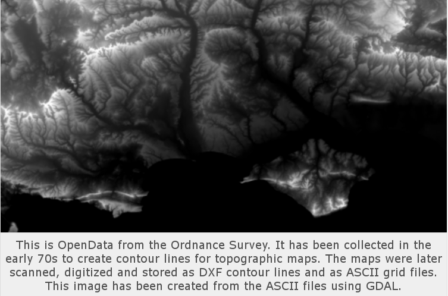

<!doctype html>
<html>
	<head>
		<meta charset="utf-8">
		<meta name="viewport" content="width=device-width, initial-scale=1.0, maximum-scale=1.0, user-scalable=no">

		<title>Proyectos de ADSIB y GeoBolivia con software libre - CONASOL 2016 - ADSIB</title>

		<link rel="stylesheet" href="css/reveal.css">
		<link rel="stylesheet" href="css/theme/beige.css">

		<!-- Theme used for syntax highlighting of code -->
		<link rel="stylesheet" href="lib/css/zenburn.css">

		<!-- Printing and PDF exports -->
		<script>
			var link = document.createElement( 'link' );
			link.rel = 'stylesheet';
			link.type = 'text/css';
			link.href = window.location.search.match( /print-pdf/gi ) ? 'css/print/pdf.css' : 'css/print/paper.css';
			document.getElementsByTagName( 'head' )[0].appendChild( link );
		</script>
	</head>
	<body>
		<div class="reveal">
			<div class="slides">
				<section data-markdown><script type="text/template">
						## ADSIB y GeoBolivia: 100% software libre

						[CONASOL 2016](http://hacklabsucre.org/conasol2016/)

						[\#CONASOL](https://twitter.com/hashtag/CONASOL)

						Universidad Andina Simón Bolivar - Sucre - 03/12/2016
				</script></section>
				<section data-markdown><script type="text/template">
						## Sylvain Lesage

						Director de la Agencia para el Desarrollo de la Sociedad de la Información en Bolivia - [ADSIB](http://adsib.gob.bo)

						[@severo_bo](https://twitter.com/severo_bo)
				</script></section>
				<section data-markdown><script type="text/template">
						## Índice

						1. Nuestra infraestructura
						2. Los proyectos
						3. El repositorio estatal de software libre
				</script></section>
				<section data-markdown><script type="text/template">
						## ADSIB - [nic.bo](https://nic.bo)

						Creada en 2002 (antes: BolNet). Desde ~2008, sistema en línea para reserva de nombres de dominios.

						| Infraestructura | Tecnologías |
						| --- | --- |
						| servidores | Debian |
						| registro | PHP, MySQL |
						| "resolver" | bind9 |
						| mails, monitoreo | postfix, dovecot, zabbix, OTRS |
				</script></section>
				<section data-markdown><script type="text/template">
						## ADSIB - [firmadigital.bo](https://firmadigital.bo)

						Desde 2014, desarrollo propio para la Entidad Certificadora Pública

						| Infraestructura | Tecnologías |
						| --- | --- |
						| servidores | Debian |
						| registro | Java, Tomcat, PGSQL |
						| certificación | JBoss, EJBCA, PGSQL |

						Un pedazo no-libre: el controlador del Hardware Security Module (HSM).
				</script></section>
				<section data-markdown><script type="text/template">
						## ADSIB - [softwarelibre.gob.bo](https://softwarelibre.gob.bo)

						Desde 2014, publicación del repositorio de software libre

						| Infraestructura | Tecnologías |
						| --- | --- |
						| servidores | Debian |
						| catálogo | PHP, MySQL |
						| repositorio de código | Gitlab |
						| foro | Question2Answer |
				</script></section>
				<section data-markdown><script type="text/template">
						## ADSIB - centro de datos

						Desde 2014, centro de datos diseñado y equipado internamente

						| Infraestructura | Tecnologías |
						| --- | --- |
						| servidores | Debian, KVM, LXC, VyOS |
						| monitoreo | Icinga, Cacti |
						| control acceso, cámaras, control temperatura e incendio | desarrollos propios HW y SW |
				</script></section>
				<section data-markdown><script type="text/template">
						## [GeoBolivia](https://geo.gob.bo)

						Desde 2011, publicación de datos espaciales abiertos (962 capas, 1.389 fichas de metadatos)

						| Infraestructura | Tecnologías |
						| --- | --- |
						| servidores | Debian |
						| Infraestructura de Datos Espaciales | geOrchestra: GeoServer, GeoNetwork, Tomcat, PGSQL/PostGis |
						| monitoreo | GeoHealthCheck |
						| sitio, cursos | SPIP, Moodle |
				</script></section>
				<section data-markdown><script type="text/template">
						## ADSIB - oficinas

						Desde 2014, toda la oficina usa únicamente software libre.

						| Infraestructura | Tecnologías |
						| --- | --- |
						| sistema | Debian |
						| aplicaciones | LibreOffice, Icedove, Iceweasel, Gajim/Empathy/Pidgin |
						| Intranet | Owncloud, RoundCube, OpenLDAP, ejabberd |
						| [¡una maquina Window$!](https://twitter.com/severo_bo/status/804770358071087105) | Facilito para impuestos, VSIAF para activos, SIGMA para personal, EBA para subsidios, biométrico|
				</script></section>
				<section data-markdown><script type="text/template">
						## ADSIB - sistemas administrativos

						| Desarrollos propios | Tecnologías | Repo SL |
						| --- | --- | --- |
						| correspondencia | PHP, MySQL | [si](https://softwarelibre.gob.bo/sistema_descripcion.php?codigo_enviar=yBeJSJMityXIO5M+YICxVITi0gZgufxhZwhN81yC5z814l4g35621al) |
						| activos fijos y almacenes | Ruby, PGSQL | pronto |
						| sistema de tareas | Ruby, PGSQL | pronto |
						| contabilidad | Ruby, PGSQL | no |
						| sitio web | SPIP, MySQL | no |
				</script></section>
				<section data-markdown><script type="text/template">
						## ADSIB - desarrollo

						| Infraestructura | Tecnologías |
						| --- | --- |
						| aplicaciones | Atom, git, Firefox, Chromium |
						| herramientas | Gitlab, OpenProject, Jenkins |
						| documentación | Readthedocs, JSDoc, Apidoc, Javadoc |
				</script></section>
				<section data-markdown><script type="text/template">
						# Proyectos
				</script></section>
				<section data-markdown><script type="text/template">
						## Datos: vida larga
						
				</script></section>
				<section data-markdown><script type="text/template">
						# ADSIB

						### Entidad certificadora pública

						Más información en https://firmadigital.bo.

						### Dominios .bo

						Más información en https://nic.bo.

						### Repositorio estatal de software libre

						Más información en https://softwarelibre.gob.bo.
				</script></section>
			</div>
		</div>

		<script src="lib/js/head.min.js"></script>
		<script src="js/reveal.js"></script>

		<script>
			// More info https://github.com/hakimel/reveal.js#configuration
			Reveal.initialize({
				history: true,

				// More info https://github.com/hakimel/reveal.js#dependencies
				dependencies: [
					{ src: 'plugin/markdown/marked.js' },
					{ src: 'plugin/markdown/markdown.js' },
					{ src: 'plugin/notes/notes.js', async: true },
					{ src: 'plugin/highlight/highlight.js', async: true, callback: function() { hljs.initHighlightingOnLoad(); } }
				]
			});
		</script>
	</body>
</html>
